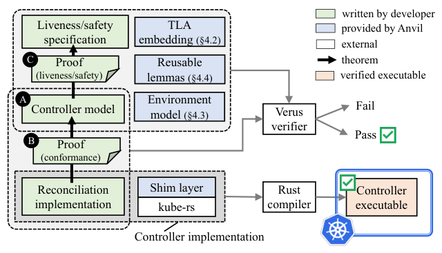
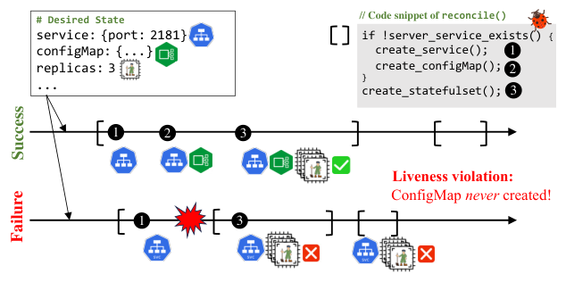
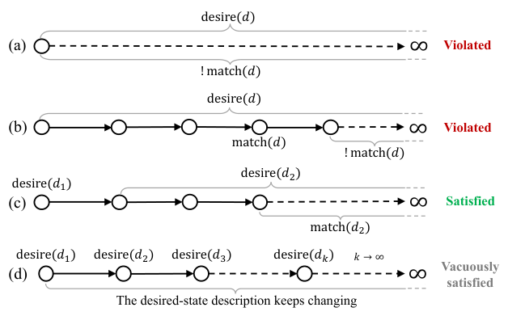
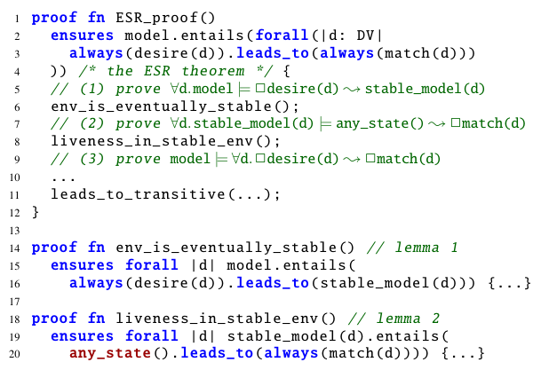
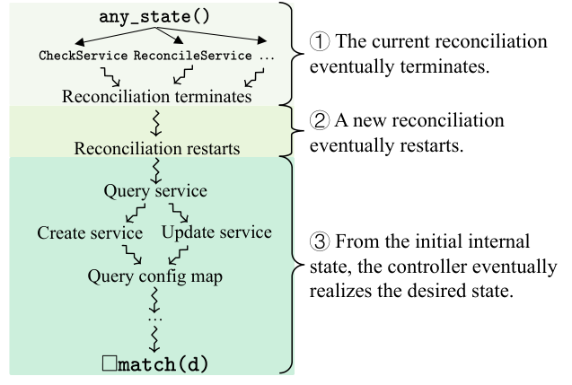
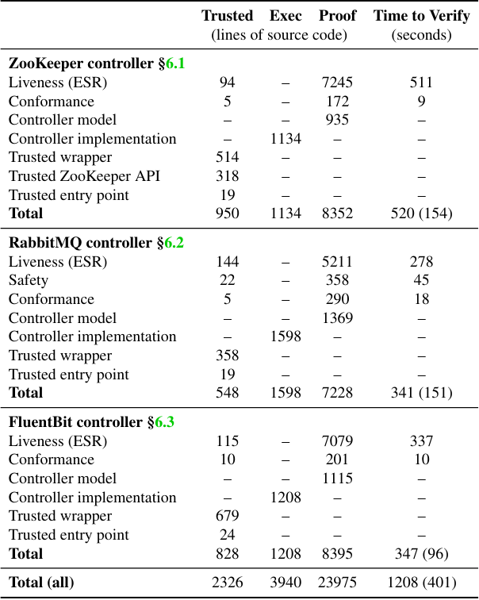
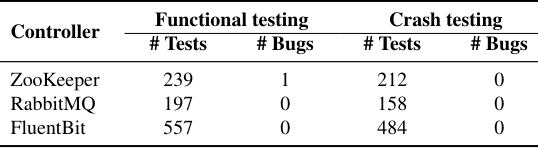
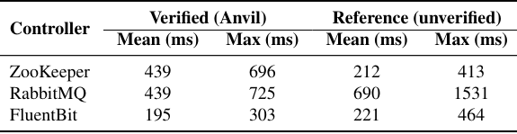

Anvil: Verifying Liveness of Cluster Management Controllers
This page was written by an AI model to give a high-level overview of the paper. Please check the paper for detail: USENIX.
Kubernetes and similar cluster managers are built from controllers: loosely coupled processes that each watch a piece of declared "desired state" and run a reconcile() loop to push the cluster toward it. A controller can be invoked at any time, from any prior cluster state, and must tolerate crashes, network asynchrony, and other controllers mutating the same objects underneath it. Automated testing tools have found dozens of real bugs where a controller never converges to the desired state after an inopportune crash (an "intermediate-state bug"), causing outages and data loss in production. These are liveness bugs: the controller does not do something wrong, it simply fails to ever finish.
Testing and model checking can find such bugs but cannot rule them out: the state space created by crashes, retries, and concurrent controllers is unbounded, so a clean test run says nothing about executions the test did not try. Prior systems-verification work mostly proves safety (the system never does something bad), which has good SMT automation. Liveness (the system eventually does something good) needs temporal reasoning about infinite executions and fairness assumptions, which is both harder to specify correctly and harder to automate, and no prior tool had applied it to controllers specifically.
The paper's first contribution is a specification: Eventually Stable Reconciliation (ESR), a single temporal-logic formula capturing what essentially all controllers should guarantee, for every desired state d: if d stops changing, the cluster eventually matches d, and once it matches, it stays matching. This single property rules out both non-termination bugs (never reaching d) and regression bugs (reaching d and then drifting away, e.g. due to a conflicting controller). The second contribution is Anvil, a framework built on the Verus deductive verifier for Rust that lets developers implement a controller as an explicit state machine, write a matching abstract model in ghost code, and mechanically prove (1) the implementation conforms to the model and (2) the model satisfies ESR under a realistic environment: asynchronous network, other Kubernetes controllers, and an arbitrary but eventually-ending stream of crashes and request failures.
The mechanism rests on a proof strategy that splits ESR into two independent lemmas: the environment eventually becomes stable (faults stop, conflicting controllers back off, the desired state stops changing), and the controller, started from any possible internal and cluster state, eventually reaches the desired state once the environment is stable. Anvil supplies a TLA-style temporal-logic embedding on top of Verus's first-order SMT reasoning, plus a library of reusable lemmas (fairness proof rules, and facts about how Kubernetes' garbage collector, StatefulSet controller, and API server behave) so developers reason about individual states and transitions and let the library handle the temporal bookkeeping.
The authors used Anvil to build and verify three practical controllers, for ZooKeeper, RabbitMQ, and FluentBit, each with feature parity to a widely used unverified reference controller. Verification cost 2 to 2.5 person-months per controller (less after the first), with a proof-to-code ratio of 4.5 to 7.4, and each proof checks in under three minutes. Verification caught real liveness and safety bugs, including one also present in the ZooKeeper controller's unverified reference that extensive fault-injection testing had missed. The verified controllers pass extensive functional and crash testing and perform comparably to their unverified references.

Key takeaways
- ESR is a single, reusable temporal-logic liveness specification (progress plus stability) that applies to essentially any state-reconciliation controller, not just Kubernetes-specific ones.
- Anvil proves ESR for controllers written as explicit state machines in Rust, verified with Verus, by checking (1) implementation-model conformance and (2) that the model satisfies ESR under a modeled environment with asynchrony, faults, and other controllers.
- The core proof trick is separating "the environment eventually stabilizes" from "the controller converges in a stable environment," reducing the problem to reusable fairness and invariant lemmas.
- Three full-featured, production-deployable controllers (ZooKeeper, RabbitMQ, FluentBit) were verified, each in 2 to 2.5 person-months, with proof-to-code ratios of 4.5 to 7.4.
- Verification found real bugs, including one shared with an unverified reference controller that passed an existing automated fault-injection testing tool, and the verified controllers match their references' performance.
From a buggy reconcile loop to a machine-checked liveness proof
Controllers and the bug pattern they're prone to, the ESR specification, Anvil's proof architecture, and how developers actually discharge the proof.
1 · Background: controllers and state reconciliation
A Kubernetes controller runs a loop: on each invocation of reconcile(), check whether the current cluster state (stored centrally, e.g. in etcd, and exposed via an API server) matches a declaratively specified desired state, and if not, issue corrective requests (create, update, delete state objects) to move toward it. Controllers are level-triggered: reconcile() can be called from any current state with no guarantee the controller has seen the full history of changes, so it must be correct no matter what state it starts from. Thousands of domain-specific controllers extend Kubernetes this way, each managing a slice of cluster or application lifecycle.
2 · The problem: liveness bugs that testing misses

A common real-world bug pattern (an "intermediate-state bug"): a controller crashes partway through a multi-step reconciliation, and on reboot the freshly invoked reconcile() checks a predicate that only looks at the first step's object, never notices the second step never happened, and reports success. The cluster is permanently stuck in an intermediate state. Such bugs depend on exact crash timing under specific workloads, which makes them hard for fault-injection testing to trigger and for model checking to scale to. Prior testing tools found 70 such bugs across 16 popular controllers, about 69% of all bugs they found, and none of them are precluded by testing alone, only by proving the controller correct for all possible crash timings.
3 · Eventually Stable Reconciliation (ESR)

ESR is formalized in TLA (temporal logic of actions) as: for all desired-state descriptions d, always, if d is always the desired state from some point on, then eventually the cluster always matches d. Using leads-to notation (P ⤳ Q meaning "whenever P holds, Q eventually holds"), the controller-correctness goal is ∀d. □desire(d) ⤳ □match(d). The □desire(d) premise is necessary and realistic: if the desired state keeps changing forever, no bound on reconciliation time can be guaranteed, so ESR only promises convergence once the target stops moving, but it promises this for every stable target, not just a fixed one.
ESR packages two properties developers usually reason about separately: progress (the cluster eventually matches d) and stability (once matching, it keeps matching, e.g. no other controller is allowed to silently undo it). It intentionally says nothing about how long reconciliation takes, which keeps the specification applicable across controllers with very different workloads. It is not a safety property: it says nothing about intermediate states being well-formed, only that a good state is eventually reached and kept.
4 · The Controller and ControllerModel APIs
Developers implement a controller against a small Rust trait: initial_state(), a deterministic step(d, r, s) that takes the desired state, the response to the last external request, and the current internal state, and returns the next internal state plus (at most) one new external request, plus done() and error() predicates. Anvil's trusted reconcile() shim exercises this state machine to completion or error, one external request at a time, so each step is atomic with respect to cluster-state changes. Developers then write a ControllerModel: the same state machine, but as Verus ghost code (ignored by the compiler, used only for verification) over mathematical types (e.g. a Rust Vec becomes a logical sequence). Proving the two correspond (implementation-model conformance) is a standard Hoare-logic postcondition check, largely automated by Verus; the harder liveness work happens entirely at the model level.
5 · Modeling the environment
To reason about a controller's interaction with everything around it, Anvil models the environment as a compound state machine: an asynchronous, unordered network; the cluster-state data store and API server (with multi-version concurrency control); other Kubernetes built-in controllers the target controller can conflict with (the garbage collector, the StatefulSet controller, the DaemonSet controller); and two kinds of faults, controller crash-reboot (losing in-memory state) and request failure. Each step of the compound machine advances exactly one of these components, or injects one fault, capturing concurrency and asynchrony (e.g. time-of-check-to-time-of-use bugs where the controller acts on a stale read) without the developer having to hand-construct interleavings.
6 · Fairness assumptions: what liveness needs to be able to assume
Liveness proofs need assumptions about which enabled actions eventually run. Anvil applies weak fairness to every component's actions: if an action stays possible, it eventually happens. For faults, the paper avoids both too-strong assumptions (e.g. "crashes at most once," which gives weak guarantees) and too-weak ones (crashes forever, under which nothing terminates) by assuming, in the spirit of partial synchrony, that faults can happen an unbounded number of times but eventually stop forever; this is modeled as a "disable-fault" action with weak fairness. The same pattern disables conflicting built-in controllers (e.g. the garbage collector, or the StatefulSet controller that races the target controller over the same object) once the target controller's own update succeeds, and re-enables them if it updates again.
7 · Reusable temporal and environment lemmas
Two libraries cut proof effort. Temporal reasoning lemmas (70+) encode standard TLA proof rules, e.g. leads-to transitivity (P⤳Q and Q⤳R imply P⤳R) and the WF1 rule for deriving a leads-to fact from a single fair action, so developers invoke a lemma instead of manually indexing into executions. Environment reasoning lemmas (60) encode facts specific to the Kubernetes environment model, such as a lemma that proves an object eventually always has an existing owner (so the garbage collector stops racing to delete it) given only that every controller request sets a valid owner; this single lemma, reused across all three case-study controllers, replaces having to re-derive the garbage collector's full send-deliver-handle chain each time.
8 · The two-lemma proof strategy for ESR

- Environment is eventually stable: faults stop (direct from the fault assumption), conflicting controllers stop racing (via lemmas like the garbage-collector one), and stale in-flight requests for old desired-state versions eventually leave the network.
- Liveness in a stable environment: from any possible state, resulting from any interleaving of prior execution and faults, the controller reaches and keeps the desired state once the environment above is stable.
- The two lemmas are combined with leads-to transitivity to produce the full ESR theorem, without having to reason about faults and convergence simultaneously.
9 · Proving liveness in a stable environment
Reasoning from an arbitrary internal state is tedious if done per state-machine branch, so Anvil structures it in three stages, illustrated by the proof pattern below: (1) the current reconciliation terminates regardless of which internal state it is in, proved by working backward (a state leads to termination if all its successors do); (2) a new reconciliation restarts after termination, which holds because the trusted shim always requeues; (3) only the initial internal state of that new reconciliation needs direct reasoning, because most controllers manage each state object (service, config map, stateful set, ...) with the same query-then-create-or-update pattern, which the paper turns into one parameterized lemma proved once and applied per object.

10 · Implementation
Anvil is built on Verus, an SMT-backed (Z3) deductive verifier for Rust. Trusted, unverified components include: wrapper types translating each Kubernetes object type from the unverified kube-rs client library into Anvil's ghost types (the largest share of trusted code); for the ZooKeeper controller, a trusted model of the ZooKeeper API (since scaling requires calling ZooKeeper directly, not just Kubernetes); the Verus/Z3 verifier and Rust compiler themselves; and the OS. Everything else, including the ESR and (for RabbitMQ) safety proofs, the controller model, and the conformance proof, is checked by the verifier before compilation. Case-study and numeric results are covered in the Evaluation tab.
Evaluation
Verification cost, correctness against extensive testing, and performance, for three verified Kubernetes controllers.
The authors built and verified full-featured controllers for ZooKeeper, RabbitMQ, and FluentBit, each matched against a mature, widely used (unverified) reference controller (the official or a company-maintained controller for that application). All experiments ran on CloudLab Clemson c6420 machines (dual Intel Xeon Gold 6142, 384 GB DRAM, 6 Gb/s HDD, Ubuntu 20.04 LTS), except verification timing, measured on a 6-core/16 GB laptop running the Verus verifier with 11 parallel threads.
| What | Value in the paper |
|---|---|
| Verification platform | 6-core, 16 GB laptop; Verus/Z3; timing with 11 parallel threads on 6 cores |
| Performance platform | CloudLab Clemson c6420: dual Intel Xeon Gold 6142, 384 GB DRAM, 6 Gb/s HDD, Ubuntu 20.04 LTS |
| Workloads | Acto-generated desired-state descriptions (functional tests) and Sieve-style random crash injection during reconciliation (crash tests) |
| Baselines | Unverified reference controllers: Pravega ZooKeeper operator, official RabbitMQ cluster-operator, official FluentBit operator |
| Metrics | Trusted/proof/implementation line counts and verification time; number of tests and bugs found; reconcile() execution time; etcd disk I/O |
Verifying a full-featured controller costs a few person-months, not years

What it shows. For each of the three controllers, lines of trusted code, executable implementation code, proof code, and verification time (ESR, safety where applicable, and conformance separately), plus totals. ESR proofs are 5,211 to 7,245 lines; total proof code across all three is 23,975 lines against 3,940 lines of unverified implementation, with full verification taking 520, 341, and 347 seconds respectively (down to 96 to 154 seconds with 11-thread parallelism). 87% of individual proof functions verify in under ten CPU seconds.
What to take from it. The proof-to-code ratio ranges 4.5 to 7.4 across the three controllers, and building each took about 2 to 2.5 person-months (far less for the second and third controller, which reused the proof strategy and lemmas from the first). The authors attribute the relatively low ratio to Anvil's reusable temporal and environment lemmas; about 40% of the proof is invariant reasoning, which the paper notes could benefit from automated invariant-inference research. A notable caveat: trusted (unverified) code is substantial, dominated (67%) by wrapper types that bridge the unverified kube-rs client library into Anvil's ghost types.
Extensive functional and crash testing found essentially nothing left to find

What it shows. For each controller, the number of Acto-generated functional tests and Sieve-style crash-injection tests run, and bugs found by each. Crash tests (212, 158, 484 tests for ZooKeeper, RabbitMQ, FluentBit) found zero bugs in all three controllers: every injected crash during reconciliation was correctly recovered from. Functional tests (239, 197, 557 tests) found one bug, in the ZooKeeper controller.
What to take from it. Zero crash-test failures is the result ESR is specifically designed to guarantee, since crash recovery under arbitrary timing is exactly what the liveness proof covers; the testing here is a post-hoc empirical check rather than the correctness mechanism itself. The one functional bug found was not a flaw in the proved liveness property but a gap in a trusted assumption: an incomplete specification of the trusted ZooKeeper API model did not account for a ZooKeeper misconfiguration causing a partial failure, which blocked reconciliation steps that depended on it. The paper fixed it by adding validation to the implementation and extending the trusted specification and proof, illustrating that Anvil's guarantees are only as strong as its trusted components.
Verified controllers run comparably to their unverified references

What it shows. Mean and max reconcile() execution time (ms) for each verified controller versus its unverified reference, under a sequence of Acto-generated desired-state descriptions. ZooKeeper: 439 ms mean / 696 ms max (verified) versus 212 / 413 ms (reference); RabbitMQ: 439 / 725 ms (verified) versus 690 / 1531 ms (reference); FluentBit: 195 / 303 ms (verified) versus 221 / 464 ms (reference).
What to take from it. The verified ZooKeeper controller is roughly 2x slower than its reference, which the paper attributes to the reference's optimization of conditionally skipping state updates (not a property Anvil forces developers to forgo, just one they did not implement); the verified RabbitMQ and FluentBit controllers are actually faster than their references. The paper's framing is that none of these differences matter in practice: reconcile() execution time is under 1% of total end-to-end system reconciliation time (most of which is outside controller control, e.g. container restart time), and the verified controllers do not noticeably increase load on etcd (0.44% more disk I/O for FluentBit, no measurable increase for the other two) compared to their references.
Verification caught bugs that fault-injection testing missed, including one shared with the unverified reference
What it shows. During development, verifying the ZooKeeper controller surfaced two liveness bugs before the code was ever deployed: one where a crash between scaling steps left reconciliation permanently stuck (the same pattern as the paper's motivating Figure 1 example), and one caused by the controller trying to update an immutable StatefulSet field, which Kubernetes always rejects. Verifying RabbitMQ surfaced a safety bug from a garbage-collector race and a liveness bug where two RabbitMQ clusters' controllers perpetually fought over a shared service object name.
What to take from it. The first ZooKeeper bug also exists in the unverified Pravega reference controller (reported by the authors as a real issue), and the paper notes that a prior automated fault-injection testing tool specifically targeting this class of bug failed to find it, because it only manifests under specific crash timing and workload conditions that the test suite did not happen to hit. This is the paper's central argument for verification over testing for this bug class: the bug is not rare because it is unlikely to matter, it is rare because triggering it requires an exact interleaving that a fuzzer with finite time is unlikely to sample.
FAQ
Q·What exactly is a "liveness bug" versus a "safety bug" in a controller?▾
A safety bug means the controller does something wrong (e.g. deletes data it shouldn't, or scales down when forbidden). A liveness bug means the controller never finishes doing something right: it gets stuck in an intermediate state and reconcile() can be called forever without the cluster ever matching the desired state. The paper's intermediate-state bug (Figure 1) is a canonical liveness bug: nothing the controller does is individually "wrong," it just never reaches the goal after a crash at the wrong moment.
Q·Why formalize one specification (ESR) instead of writing a bespoke correctness property per controller?▾
Bespoke safety properties require knowing in advance what kind of bug to rule out (e.g. "irrecoverable intermediate states never happen" requires knowing which intermediate states are irrecoverable). ESR only requires knowing what the desired state is, which every controller already specifies, so it is both general across controllers and straightforward for developers to state. The tradeoff is that ESR does not rule out every possible bug, only progress and stability bugs; controller-specific safety properties (like RabbitMQ's no-scale-down rule) still need to be stated and proved separately.
Q·Does ESR guarantee the controller is fast, or has bounded recovery time?▾
No, deliberately. ESR only promises eventual convergence, with no bound on how long reconciliation takes. The paper avoids committing to a time bound because reconciliation duration varies hugely across controllers and workloads; the goal is to preclude bugs where the controller never converges at all, not to bound latency.
Q·What does Verus add here that Rust's own type system or compiler doesn't give you?▾
Verus is a separate deductive verifier (SMT-backed, via Z3) layered on Rust: developers write specifications and proofs as Rust-like "ghost code" that is checked by Verus before compilation and then erased, adding no runtime cost. It lets Anvil prove full-blown functional and temporal-logic properties about the implementation, which Rust's type system (ownership, borrowing) cannot express.
Q·How does Anvil add temporal-logic (TLA) reasoning on top of an SMT-based tool that doesn't natively support it?▾
Anvil builds a "TLA embedding": it encodes executions as functions from natural numbers to states, and defines each temporal operator (eventually, always, leads-to) purely with first-order quantifiers over such functions, following the same approach as IronFleet. This lets Verus's existing first-order SMT reasoning check temporal-logic proofs, as long as developers have Anvil's reusable lemmas to avoid manually unfolding these definitions.
Q·What stops the verified controller from just assuming crashes never happen, to make the proof easier?▾
The environment model forces crashes and request failures to be possible at essentially every step; the developer cannot opt out of them. The only lever Anvil provides is the fault-fairness assumption: faults can happen an unbounded number of times but must eventually stop, modeled by a fair "disable-fault" action. This is a deliberate middle ground, since assuming crashes stop entirely from the start would be unrealistic, while assuming they never stop would make no liveness property provable.
Q·Why does Anvil need to model Kubernetes' built-in controllers (garbage collector, StatefulSet controller, DaemonSet controller) at all?▾
Because the target controller shares cluster state with them, and they can race it: for example the garbage collector may delete an object the target controller just updated, based on a stale view, or the built-in StatefulSet controller may overwrite a field the target controller is also trying to update. Proving the target controller still converges requires assuming these built-in controllers eventually stop conflicting on the relevant object, which Anvil encodes with the same fair "disable" action pattern used for faults.
Q·How is this different from the automated testing tools (Acto, Sieve) that already find controller bugs?▾
Acto and Sieve-style fault injection generate and run concrete test scenarios, and can only report bugs they happen to trigger; a clean test run is not a correctness guarantee. Anvil instead proves the property holds for all executions permitted by the environment model. The paper demonstrates the gap directly: a liveness bug in the ZooKeeper reference controller was missed by prior fault-injection testing but found by Anvil's proof, because it only manifests under a specific timing the test suite didn't sample.
Q·How is Anvil different from IronFleet, the other major liveness-verification systems paper?▾
IronFleet verifies specific systems (a Paxos-based replicated state machine, a sharded key-value store) against system-specific liveness properties, and its liveness proofs directly index into instantiated executions. Anvil instead formalizes one general, reusable specification (ESR) that applies across different controllers, and its proof style abstracts executions away entirely, letting developers reason purely at the level of states, actions, and temporal operators rather than indices into an execution sequence.
Q·What is still unverified and could still hide a bug, even in a "verified" controller?▾
The trusted computing base: the environment model itself, the wrapper types bridging to the unverified kube-rs client library, trusted non-Kubernetes API models (e.g. the ZooKeeper API model), and the verifier, Rust compiler, and OS underneath all of it. The paper's own evaluation found a bug of exactly this kind: an incomplete trusted ZooKeeper API specification that didn't model a misconfiguration scenario.
Q·Can you run multiple Anvil-verified controllers together, or verified controllers alongside unverified ones?▾
The paper's experiments verify each controller individually and run it alongside Kubernetes' own built-in controllers, which are modeled in Anvil's environment. It explicitly does not yet verify interactions among multiple Anvil-verified custom controllers, or interactions with unverified custom controllers not covered by the environment model; both are stated as future work, including extending Anvil to modularly verify multiple verified controllers together.
Q·Do the verified controllers actually have fewer features than the production ones they replace?▾
No; the paper explicitly targets feature parity. The ZooKeeper and RabbitMQ verified controllers implement the key features of their references (scaling, version upgrades, resource allocation, pod placement, configuration, networking, storage), and the FluentBit verified controller implements all features of its reference. The verified controllers also added some features missing from the references, such as automatic server restarts on ZooKeeper configuration changes.
reconcile() function.reconcile() must behave correctly when invoked from any current state, without relying on having observed every prior state change.P ⤳ Q means "always, if P holds now, Q eventually holds," used to chain partial progress steps into a full liveness proof.